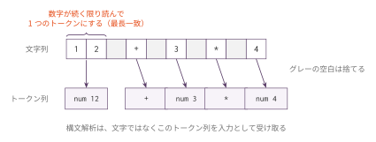
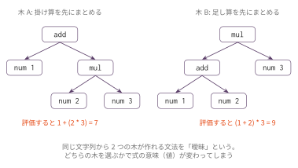
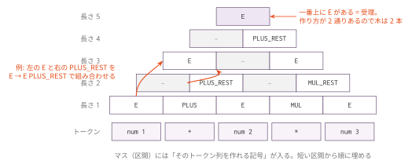

字句解析と構文解析 — CYK 法で数式を解く
今日のゴール
数式の文字列をトークン列に区切り（字句解析）、CYK 法で構文木を組み立て（構文解析）、 木を評価して値を出すところまでを、独立した小さなプログラムで一通り体験する。
これまでの回では、Lexer と Parser は教員提供のブラックボックスだった。 この回では、そのブラックボックスが何をしているのかを、最も愚直で確実な方法で自分の手で作って理解する。
この回の位置づけ
| 項目 | 内容 |
|---|---|
| 必須の前提 | コマ1（eval_ast）まで |
| 推奨の前提 | — |
| 改変しない | mycc.py、scaffold/（この回はコンパイラ本編と独立している） |
| 編集する | cyk.py |
| 完了条件 | check.py の全 Step が PASS になる（このトピックに golden.py は無い） |
| コマ数 | 1 |
| 備考 | フロントエンド発展シリーズの第0回。対象にする言語は、整数と + * ( ) だけの数式である |
続きの F1〜F4（Lexer / Parser の自作、スキャフォールドの置き換え）は選択制の発展課題として用意する。
言語と文法
プログラミング言語を作るとき、まず決めるのは「どんな文字列を正しいプログラムと認めるか」である。 この「正しい文字列の集合」を言語と呼び、言語を定義する規則を文法と呼ぶ。
数式の文法は、たとえば次のように書ける。
E → E + E
E → E * E
E → ( E )
E → numE は「式」を表す記号である。
この規則は「式とは、式 + 式 か、式 * 式 か、カッコで囲んだ式か、数である」と読む。
規則を繰り返し適用して文字列を作ることを導出という。
E ⇒ E + E ⇒ num + E ⇒ num + E * E ⇒ num + num * E ⇒ num + num * num1 + 2 * 3 はこの文法から導出できるので、この言語の文である。
1 + * 2 はどう頑張っても導出できないので、この言語の文ではない。
構文解析とは、この向きを逆にした問題である。
文字列が与えられたとき、それを導出できるか判定し、導出の過程（= 構文木）を復元すること。
字句解析とは
文法の規則に出てきた num は「数」というひとかたまりを表していた。
しかし入力は "12 + 3 * 4" のような文字の並びであり、1 と 2 はまだバラバラの文字である。
そこで、構文解析の前に、文字列を意味のある最小単位（トークン）の列に区切る。 これが字句解析である。

- 空白は捨てる
- 数字の並びは、数字が続く限り読み進めて1つの
numトークンにまとめる（最長一致） +*()は1文字で1トークン
なぜ2段階に分けるのか。
トークンの中身（「数字の並び」など）は、隣の文字を見るだけで切れる単純なパターンである。
一方、トークンの並び（カッコの対応など）は、いくら長い範囲を眺めても「パターン照合」だけでは判定できず、
数えたり対応を取ったりする仕組みが要る。
性質の違う2つの仕事を分けることで、それぞれが単純になる。
(((...))) のようなカッコの対応が正規表現で書けないことは、形式言語理論で証明できる
（正規言語と文脈自由言語の違い）。
この回では、トークンを Python のタプル (kind, value) で表す。
| 入力 | トークン列 |
|---|---|
12 + 3 |
[('num', 12), ('+', None), ('num', 3)] |
(1) |
[('(', None), ('num', 1), (')', None)] |
構文解析の出力は「木」— 曖昧性
1 + 2 * 3 を先ほどの文法で導出する方法は、実は1通りではない。

どちらも文法的には正しい導出である。 しかし木A を評価すると 7、木B を評価すると 9 になる。 構文解析の出力は木であり、どの木を選ぶかで式の意味が決まる。
同じ文字列に2つ以上の木を許してしまう文法を曖昧な文法という。
コマ1 で parse_viewer.py が常に「掛け算が先」の木を返していたのは、
Parser が曖昧さのない形で木を決めていたからである。
その仕組み（優先順位を文法に組み込む方法）はこの回の最後に扱う。
CYK 法の考え方
いよいよ構文解析を行う。この回で使うのは CYK 法（Cocke–Younger–Kasami 法）である。
CYK 法のアイデアは1つだけ。
「トークン列の区間 tokens[i:j] は、どの記号から導出できるか？」を、短い区間から順に表に埋めていく。
- 長さ1の区間は、トークン1個を直接作れる規則で埋まる
- 長さ2以上の区間
tokens[i:j]は、分割点kで2つに割り、 「左半分tokens[i:k]を作れる記号 B」と「右半分tokens[k:j]を作れる記号 C」の組が 規則A → B Cに一致すれば、Aを書き込む - 最後に、全体の区間に開始記号
Eがあれば受理
短い区間の答えを使い回して長い区間を埋める、動的計画法である。

一番上のマスに E があるので 1 + 2 * 3 は受理される。
さらに、このマスへの「作り方」が2通り記録されており、これがそのまま木A・木B の2本に対応する。
CYK 法はすべての構文木を同時に見つける方法でもある。
手で表を埋める: 2 * 3 + 4 をトークン列にし、上の図と同じ要領で表を埋めよ。
一番上のマスに E は入るか。作り方は何通りあるか。
それぞれの木を評価すると、値はいくつになるか。
（実装が終わったら python3 cyk.py --table '2 * 3 + 4' で答え合わせできる）
チョムスキー標準形
CYK 法は「区間を2つに割る」ことを繰り返すので、文法の規則が次の2形だけである必要がある。
A → B C （右辺は記号ちょうど2個）
A → 'tok' （右辺はトークン1個）この形の文法をチョムスキー標準形（CNF）という。 どんな文法もこの形に機械的に変換できる（付録参照）。この回では変換済みの文法を配布する。
たとえば E → E + E は、+ E の部分に PLUS_REST という補助記号を導入して2個ずつに割る。
E → E PLUS_REST PLUS_REST → PLUS E PLUS → '+'cyk.py では、文法を Python の辞書で表す。
GRAMMAR_AMBIG = {
"start": "E",
"terminal_rules": [ # A → 'tok'
("E", "num"),
("PLUS", "+"), ("MUL", "*"), ("OPEN", "("), ("CLOSE", ")"),
],
"binary_rules": [ # A → B C
("E", "E", "PLUS_REST"),
("E", "E", "MUL_REST"),
("E", "OPEN", "CLOSE_REST"),
("PLUS_REST", "PLUS", "E"),
("MUL_REST", "MUL", "E"),
("CLOSE_REST", "E", "CLOSE"),
],
}実装
cyk.py のスケルトンには TODO が5つある。上から順に実装する。
各 Step が終わるたびに python3 check.py で確認できる（未実装の Step は SKIP と表示される）。
Step 1: tokenize — 字句解析
| 処理 | 内容 |
|---|---|
| 空白 | 読み飛ばす |
| 数字 | 数字が続く限り読み、('num', 値) にする |
+ * ( ) |
(文字, None) にする |
| それ以外 | SyntaxError を投げる |
Step 2: cyk_chart — 表を埋める
表は辞書で表す。chart[(i, j)] が区間 tokens[i:j] のマスである。
マスの中身は「記号 → 作り方のリスト」の辞書とする。
chart[(i, j)] = {記号: [作り方, ...]}
# 作り方は ('tok', トークン) または (k, B, C)
# (k, B, C) は「tokens[i:k] が B、tokens[k:j] が C」という分割埋める手順は2段階である。
1. 長さ1: 各 i について、tokens[i] の kind に一致する terminal_rules の
記号 sym ごとに、('tok', tokens[i]) を cell[sym] に追加する
2. 長さ2以上: 長さの短い順に、各区間 (i, j) について
分割点 k（i < k < j）を全部試す。
binary_rules の (sym, B, C) について、B が chart[(i, k)] にあり
C が chart[(k, j)] にあれば、(k, B, C) を cell[sym] に追加する受理判定 accepts() はスケルトンに完成済みで、
chart[(0, len(tokens))] に開始記号があるかを見るだけである。
Step 3: build_tree — 木を1本復元する
表には「作り方」が記録してあるので、それを逆にたどれば木になる。
chart[(i, j)][sym] の最初の作り方を見る
- ('tok', トークン) なら葉 (sym, トークン)
- (k, B, C) なら、左 (i, k) の B と右 (k, j) の C を再帰的に復元して
(sym, [左の木, 右の木])復元されるのは補助記号（PLUS_REST など）を含んだ CNF の導出木である。
これを見慣れた AST（('add', 左, 右) など）に直す to_ast() と、
S 式にする to_sexpr() は完成済みである。
S 式の形式は parse_viewer.py と同じにしてある。
(add (num 1) (mul (num 2) (num 3)))Step 4: count_trees — 木を数える
作り方ごとに本数を求めて合計する。
| 作り方 | 本数 |
|---|---|
('tok', トークン) |
1 |
(k, B, C) |
左 B の本数 × 右 C の本数 |
曖昧文法 G1 では 1 + 2 * 3 が2本、1 + 2 * 3 + 4 が5本になるはずである。
Step 5: eval_ast — 評価
コマ1 で書いたものと同じ考え方である。
('num', 値) は値を返し、('add', 左, 右) / ('mul', 左, 右) は左右を評価して足す / 掛ける。
優先順位は文法で表現できる
スケルトンには2つ目の文法 GRAMMAR_PREC が入っている。
これは次の文法を CNF にしたものである。
E → E + T | T （式 = 項を + でつないだもの）
T → T * F | F （項 = 因子を * でつないだもの）
F → ( E ) | num （因子 = カッコ式か数）+ の材料は「項 T」まで、* の材料は「因子 F」までしか許さない。
この制限によって「足し算を先にまとめる木」は文法的に作れなくなる。
同じ入力を2つの文法で解析して、木の本数を比べてみる。
| 入力 | G1（曖昧） | G2（優先順位つき） |
|---|---|---|
1 + 2 * 3 |
2本 | 1本 |
1 + 2 * 3 + 4 |
5本 | 1本 |
G2 では木が常に1本に定まり、その木は「掛け算が先」になっている。
演算子の優先順位とは、パーサーに埋め込まれた特別な仕組みではなく、文法の書き方そのものである。
コマ1 以降ずっと使ってきた Parser の優先順位処理の正体はこれである。
なお language_spec.md の本文では、この階層を優先順位表の形に畳んで示している
（表の1行が上の E / T のような1段に対応する）。
動かし方
python3 cyk.py '1 + 2 * 3'
python3 cyk.py --table '1 + 2 * 3' # CYK の表も表示するすべて実装できると、次のように表示される。
入力 : 1 + 2 * 3
トークン列 : [('num', 1), ('+', None), ('num', 2), ('*', None), ('num', 3)]
--- 曖昧な文法 G1 ---
受理 : Yes（構文木は 2 本）
最初の木 : (add (num 1) (mul (num 2) (num 3)))
評価結果 : 7
--- 優先順位つき文法 G2 ---
受理 : Yes（構文木は 1 本）
最初の木 : (add (num 1) (mul (num 2) (num 3)))
評価結果 : 7編集するファイル
cyk.py
| 実装対象 | 役割 |
|---|---|
tokenize(src) |
Step 1: 字句解析 |
cyk_chart(tokens, grammar) |
Step 2: CYK の表を埋める |
build_tree(chart, i, j, sym) |
Step 3: 木を1本復元する |
count_trees(chart, i, j, sym) |
Step 4: 木の本数を数える |
eval_ast(ast) |
Step 5: 評価（コマ1 の再利用） |
テスト
python3 check.pyStep ごとに PASS / FAIL / SKIP が表示される。 途中の Step までしか終わっていなくても、そこまでが PASS していれば前進である。
発展課題
-と/を追加する（tokenize・両方の文法・to_ast・eval_astを拡張する）build_treeを全列挙版all_treesに拡張し、G1 の1 + 2 * 3から 7 と 9 の両方の値が出てくることを確かめる- G1 での木の本数を
num + num + ... + numで数え、演算子 n 個のときの本数の規則性を見つける - 長い式で実行時間を計り、トークン数に対してどう増えるか観察する（CYK は O(n³) である）
- 付録を読んで、
E → E + T | Tの CNF 変換を自分の手でやってみる
付録: CNF 変換の概略。
どんな文法も次の2操作でチョムスキー標準形にできる。
（1） 右辺が3個以上の規則は、補助記号を導入して2個ずつに割る
（F → ( E ) は F → OPEN CLOSE_REST、CLOSE_REST → E CLOSE）。
（2） E → T のような「右辺が記号1個」の規則（単位規則）は、
T の規則を E に展開して消す。
GRAMMAR_PREC で E にも T にも ("E", "num") ("T", "num") があるのはこのためである。
次回予告
CYK 法はどんな文脈自由文法でも扱える汎用の方法だが、計算量は O(n³) で、 1万トークンのソースコードには使えない。
実際のコンパイラは、文法の側を「先読み1トークンで迷わず進める形」に工夫して、
表を作らずに一直線に解析する。それが再帰下降構文解析であり、
スキャフォールドの parser.py の正体である。
続きの F1〜F4 では、scaffold/lexer.py と parser.py を読み、
同じものを自作してスキャフォールドを置き換える。